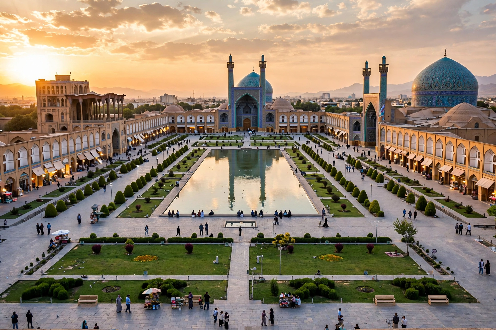

| Naqsh-e Jahan Square | |
|---|---|
 | |
| Location | Isfahan, Iran |
| Built | 1598 – 1629 |
| Dimensions | 560 m × 160 m (approx.) |
| Founder | Shah Abbas I |
| UNESCO | World Heritage Site (1979) |
Naqsh-e Jahan Square (Persian: میدان نقش جهان, Maidān-e Naqsh-e Jahān, "Image of the World Square"), also known as the Shah Square (Maidan-e Shah) and, after 1979, as Imam Square, is a great public square in the centre of Isfahan, Iran. Built between 1598 and 1629 under Shah Abbas I, who made Isfahan his capital, it is one of the largest city squares in the world — about 560 metres long and 160 metres wide — and a masterpiece of Safavid urban planning. It was inscribed on UNESCO's World Heritage List in 1979.
The square is ringed by a continuous two-storey arcade of shops. At its four sides stand four great monuments, each representing a pillar of the Safavid state:
Before Abbas's rebuilding, the site held gardens known as Naqsh-e Jahan, from which the square took its name. The square was designed as the ceremonial and commercial heart of the new capital: polo (chowgan) was played on its field — the original marble goal posts still stand at either end — and it hosted parades, public executions, festivals and markets. Under the Pahlavi monarchy it was renamed Shah Square; after the Iranian Revolution of 1979 it became Imam Square (after Ayatollah Khomeini), though the name Naqsh-e Jahan remains in universal use. UNESCO's citation praises the square as testimony to Persian social and cultural life under the Safavids.
See also: Shah Abbas I · Isfahan · Safavid dynasty